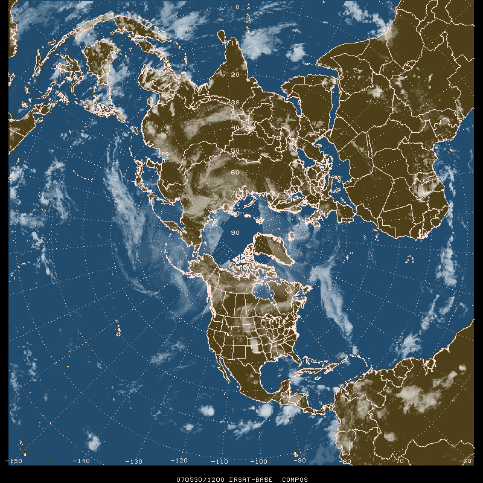

Data Used
PROJ = STR/90;-105;0
GRDAREA = -21;-150;-21;30
KXKY = 800;800
GRDNAM = irsat
GDFILE = nhem_sat.gem
GLEVEL = 0
GVCORD = none
GDATTIM =
CPYFIL =
MAXGRD = 200
IMGTIM = last
CALIMG = no
IMGFIL = NHEMMULTI_IR
GEMPAK-IMG2GD>r
satellite image date/time 070530/1200
GDATTIM = last
GDFILE = nhem_sat.gem
GLEVEL = 0
GVCORD = none
SCALE = 0
GFUNC = add(mul(bool(sea),143),miss(sub(sle(sgt(irsat,112),255),112),1))
PROJ = STR/90;-105;0
GRDAREA = -21;-150;-21;30
KXKY = 800;800
CPYFIL =
SATFIL = COMP_YYYYMMDD_HHNN
CALINFO = 99/10/SAT,0,94,0,286
WMOHDR = TICZ99/CHIZ/
GEMPAK-GD2IMG>r
IRSAT-BASE COMPOS 0 94 11 2**9 1 upc_t_s.tbl
MAP = 1
GAREA = dset
PROJ = sat
SATFIL = COMP_20070530_1200
LUTFIL = upc_t_s.tbl
